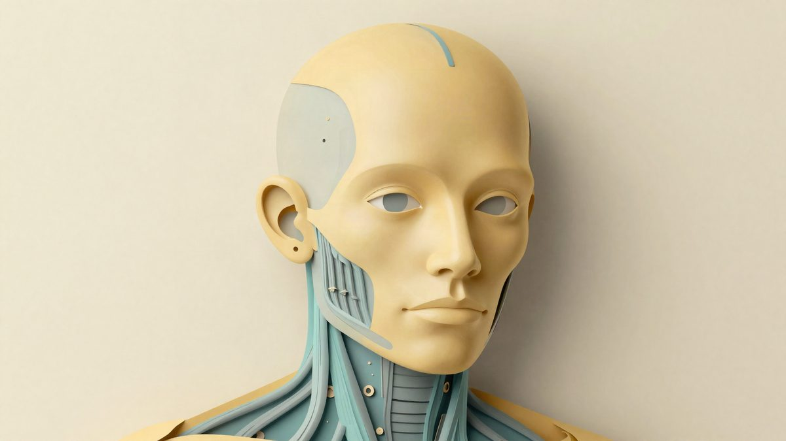
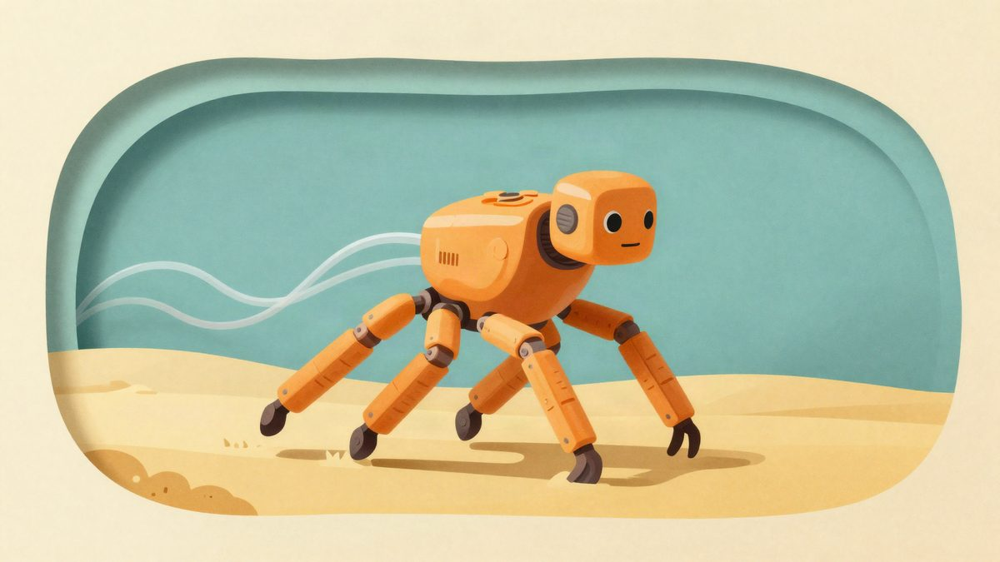

Tokijski sveučilišni tim napravio je robotsku glavu s 65 umjetnih mišića i ljudskom mimikom

Istraživači sa Sveučilišta u Tokiju razvili su robotsko lice koje anatomski oponaša ljudsko, s 65 umjetnih mišića i motorima izvan glave. Prototip sa silikonskom kožom reproducira 30 od 47 osnovnih pokreta lica, a robot ne može zatvoriti oči.
Istraživači sa Sveučilišta u Tokiju razvili su model ljudskog lica s umjetnim mišićima koji prilično vjerno prati anatomiju. Konstrukcija ima 65 umjetnih mišića koji predstavljaju 34 anatomska tipa, a motori koji ih pokreću nalaze se izvan same glave.
Postojeći roboti s imitacijom mimike ne mogu prikazati cijeli raspon osnovnih pokreta mišića lica i kože. Za to bi trebalo toliko pogona i poluga da se sve ne bi moglo smjestiti u prednji dio glave. Zato su istraživači što vjernije reproducirali mišićnu strukturu zaduženu za mimiku, a upravljanje mišićima izmjestili iz glave.
Kako je građeno
Položaj, geometrija i točke pričvršćenja mišića određeni su prema volumetrijskim anatomskim atlasima. Mišićni elementi izrađeni su od termoplastičnog poliuretana (TPU) u cik-cak strukturi, što im omogućuje stezanje i rastezanje. Mišići se stežu zatezanjem upravljačkih sajli provučenih kroz cijevi od politetrafluoretilena (PTFE), pa se pogonski mehanizmi mogu izmjestiti iz prednjeg dijela glave. Silikonska koža izlijeva se u zasebnim sekcijama, a imitacije mišića pričvršćene su na nju s unutarnje strane.
Rezultati testa
Za provjeru je korišten sustav FACS (Facial Action Coding System), usvojen 1978. godine, koji mimiku opisuje s 47 zasebnih motoričkih jedinica (Action Units), odnosno pojedinačnih pokreta dijelova lica. U prvoj fazi istraživači su ručno zatezali upravljačke sajle bez ugrađene kože i uspjeli reproducirati 40 od 47 osnovnih pokreta, među njima podizanje obrva, pomicanje donje čeljusti, pokrete očnih jabučica i isplacanje jezika.
Nakon ugradnje silikonske kože reproducirano je samo 30 pokreta. Robot je ipak pokazao tipične ljudske izraze, poput isticanja brade, podizanja i spuštanja kutova usta te naboravanja nosa.
Ograničenja
Nedostataka je bilo dosta. Za napuhivanje obraza i neke pokrete usana trebao bi pneumatski pogon, kojeg trenutna verzija nema. Nedovoljna elastičnost silikonske kože i način spajanja mišića s kapcima ometali su potpuno kretanje očiju, a robot ih nije mogao zatvoriti.
Istraživači u budućnosti planiraju složeniju mimiku s više mišića, a ručno upravljanje žele zamijeniti daljinskim pogonima.
Izvor: 3DNews
Povezani članci

Meki robot iz 3D printera trči 17 km/h bez ikakve elektronike19. studenoga 2026. Moždani implantat vratio govor pacijentima s ALS-om: razumljivost do 94 posto, jedna pacijentica ponovno pjeva15. studenoga 2026.
Moždani implantat vratio govor pacijentima s ALS-om: razumljivost do 94 posto, jedna pacijentica ponovno pjeva15. studenoga 2026.- Kineski tim je postavio rekord: 116 podvodnih dronova u jednom roju10. studenoga 2026.